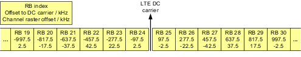

In the in-band operation mode, an NB-IoT carrier uses a small part of an LTE carrier. The resources are flexibly assigned to LTE or to NB-IoT, only to one technology at a time. So there is no interference between LTE and NB-IoT. But the capacity available for LTE is reduced by NB-IoT.
As for the guard-band operation mode, the NB-IoT signaling application generates an NB-IoT cell signal and an LTE cell signal. If both cells share a physical cell ID (mode "Inband-SamePCI"), the UE can use the LTE CRS OFDM symbols for NB-IoT.
In the in-band operation mode, the NB-IoT carrier uses exactly the frequency span of an LTE resource block (RB). In the LTE downlink, the center subcarrier is not used. A resource block covers 180 kHz, a DL subcarrier 15 kHz.
The following figure illustrates the DL frequencies in the center of a 10-MHz LTE channel.

You can see that the resource blocks have different offsets to the LTE 100-kHz channel raster, the so-called channel raster offset. For cell BWs with an even total number of RBs, there are absolute DL channel raster offsets from 2.5 kHz to 42.5 kHz. For cell BWs with an odd total number of RBs, the absolute DL channel raster offsets range from 7.5 kHz to 47.5 kHz.
Large DL channel raster offsets are a problem, because the UE uses the 100-kHz channel raster for cell search. For that reason, 3GPP allows only NB-IoT DL frequencies with the smallest possible offset (2.5 kHz or 7.5 kHz). The RBs around the center of the LTE channel are also not allowed, because they carry synchronization signals.
The following table lists the RB indices that are allowed for NB-IoT, depending on the LTE cell BW. Currently, only 10 MHz cell BW is supported.
3 MHz | 5 MHz | 10 MHz | 15 MHz | 20 MHz | |
|---|---|---|---|---|---|
RBs | 2, 12 | 2, 7, 17, 22 | 4, 9, 14, 19, 30, 35, 40, 45 | 2, 7, 12, 17, 22, 27, 32, 42, 47, 52, 57, 62, 67, 72 | 4, 9, 14, 19, 24, 29, 34, 39, 44, 55, 60, 65, 70, 75, 80, 85, 90, 95 |
In contrast to the LTE DL, the LTE UL uses the center subcarrier. As a consequence, the UL channel raster offset differs by 7.5 kHz from the DL channel raster offset. For carriers below the LTE DC carrier, the UL offset equals the DL offset plus 7.5 kHz. For carriers above the LTE DC carrier, the UL offset equals the DL offset minus 7.5 kHz.
The NB-IoT signaling application takes care of all the dependencies. You configure the NB-IoT RF frequency as for the standalone mode, for example via a channel number. And you select which allowed resource block you want to use for NB-IoT. The software calculates the resulting LTE carrier frequencies and the channel raster offsets automatically. The channel raster offsets are added to the configured NB-IoT RF frequencies.